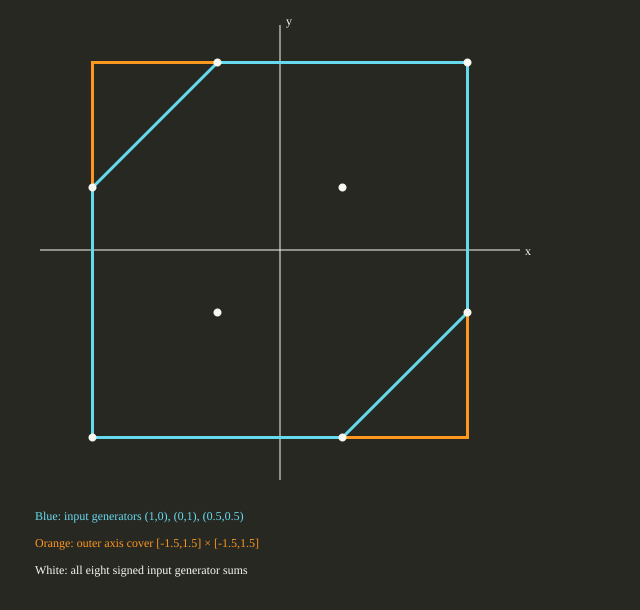

Three authored planar cases exercised the registered public CSL::approximation and conversion paths at e105a86b8e2ab7d09b1e7042fc5f0d5bc0ce5c40. The cover retains selected generator factors and replaces omitted factors with independent coordinate-axis generators. The exact method removes zero generator columns only.
| Case | Relation | Output rows | Median batch duration |
|---|---|---|---|
| constrained-axis-cover | outer | [[2, 0.75, 0], [0, 0, 1.75]] | 924,700 ns (range 919,500–954,100) |
| diamond-axis-cover | outer | [[1.5, 0], [0, 1.5]] | 794,000 ns (range 788,600–859,600) |
| zero-column-exact | equivalent | [[2, 0], [0, 3]] | 275,100 ns (range 266,500–280,500) |

The raw fixture declarations and SHA-256 input identities are in records.json. Each completed public call was checked against the literal generator matrix, factor count, relation, evidence identity and absence of an error bound after timing. The approximation policy separately checks stored-binary64 outer inclusion. The constrained case relaxes its input factor equality, which is declared in the saved fixture and method evidence. No finite approximation error bound, validated real-arithmetic guarantee, optimizer result or complete optimal family is claimed.
One excluded 100-call warmup per case preceded seven rotated three-case rounds of 100 calls per case: 2,100 measured calls with zero recorded failures. Each steady-clock interval includes selection, a fresh provider workspace, public adapter work and independent admission for the outer cases. Fixture and registry construction, post-call literal checking, CSV writing, process launch and rendering are excluded. One worker and one native thread were used; internal counters are unavailable. These single-adapter observations have no comparator, speedup, source-mapped limiter or scalability conclusion.
Host DESKTOP-S9O3F6S: Intel64 Family 6 Model 151 Stepping 5, GenuineIntel; Windows-11-10.0.22631-SP0. The saved build provenance, configure log, build log, raw CMake cache and compiler receipt describe the Release configuration. HiGHS and Qhull were disabled.
At the linked source commit, configure CMake with BUILD_TESTING=OFF, CSL_ENABLE_HIGHS=OFF, CSL_ENABLE_QHULL=OFF and CSL_BUILD_APP03_REPORT=ON. Build csl_app03_zonotope_report in Release, then run smoke and measure. The saved driver, raw measured CSV and source receipts allow independent inspection.